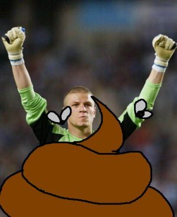
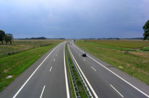

Real Fachadolid
 De: La Frikipedia, la enciclopedia extremadamente seria.
De: La Frikipedia, la enciclopedia extremadamente seria.
De la serie Equipos de furbo:
Escudo de armas del Real Fachadolid
| Nombre completo
|
Real Fachadolid Deportivo por la gloria de Dios, de España y del Rey
|
| Liga
|
La Primera División española
|
| Año de fundación
|
Cuando la Maricastaña
|
| Estadio
|
El Nuevo José Putilla
|
| Entrenador
|
Juan Ignacio Martínez
|
| Presidente
|
Pucelo
|
| Número de aficionados
|
Fachas y pucelanos
|
| Jugadores ilustres
|
Alhassane Keita Otchico
|
| Palmarés
|
tantos títulos que no caben ni en Madriz
|
«Es un mal equipo, conmigo será más fuerte. Espero aportar velocidad y pocos goles»
~ Keita O'Chico el día de su presentación, haciendo amigos
«No tengo problemas. He mejorado mi calidad y confianza. Pasé del Mallorca para chupar banquillo y eso es lo que hago, estoy feliz por no jugar. Si me puedo quedar en el equipo sería lo mejor para mí, pero dependo del Real Fachadolid. Creo que es difícil para mí encontrar otros equipos»
~ Keita O'Chico un par de meses después de estar en el Real Fachadolid
«¡¡GILIPO-LLAAAAAS, PELELEEEEE!!»
~ Niños fachasoletanos mientras escupian exabruptos contra Pucelo al tiempo que le dan de patadas y le encajan balones en la cabeza
Equipo de furbol español del norte de la península ibérica conocido por haber sido,ser y seguir siendo por los siglos de los siglos el puto mejor equipo de futbol de toda la historia de la humanidad y del universo, muy por encima de otros como el Renal Mandril o el Farsa. El Real Fachadolid es el equipo de la ciudad de Fachadolid, y es admirado, venerado y respetado mas allá de las fronteras de la Vía Láctea, y considerado como una de las organizaciones mas increibles y mejor administradas del orbe celestial, teniendo trillones de socios que se extienden hasta donde no llega la vista, mas allá del firmamento.
El Jebi Borracho y Berreón procediendo a la fundación del Real Fachadolid
Fundación
Cierto Jueves de milochocientos y pico juntáronse en El Merinos, el bar mas limpio, espacioso y que da el mejor y mas saludable y cristalino kalimocho de Fachadolid, el inglés con bombín, el jebi borracho y berreón, el perseguidor de autobuses y el motero loco del MIRALA MIRALA LA PUERTA DE ALCALÁ. Tras dejar seca Castilla y arrasar con todas las plantaciones de vid de dicha tierra, acumularon una deuda de mas de mil trillones de leuros. Tuvo que ser el magnanimo y misericordioso Javi leoncho de la priba el que pagó la deuda junto con la generosa aportación de Tornadijo, líder, santo, dios , gurú , y crack de las ondas e ídolo celestial de todos los fachadoletanos. Con la vuelta del pago de la deuda mas la vuelta del café se fundó el Real Fachadolid y con él la ilusión del mas maravilloso club de la historia.
Financiación
El Real Fachadolid obtiene su estratosférica cantidad de dinero a partir de donaciones de poderosas empresas y accionistas, como por ejemplo:
- Javi leoncho de la priba , Alcalde de Fachadolid por la gracia de Dios. El volumen de oro que otorga a la entidad futbolística debe transportarse en buques mas o menos del tamaño del Queen Mary 2
- Las tias esas de Mandril: mas tacañas y usureras que su puta madre. Dan limosnas al Real Fachadolid a cambio de favores sexuales de Kaminero, mascota del club y follador de mujeres, yeguas y cerdas indistintamente.
- La organización de chaperos de Castilla, entidad de gran patriotismo que tiene el 12% de las acciones del club
- Ignacio Lewin Fernandez de nosequé, que se compró el club como quien juega al Monopoly
- Tornadijo: líder mundial , máximo comunicador futbolístico y estratosférico. Mito sexual de las Fachisoletanas y sueño para admirar por parte de niños y jóvenes de la ciudad
- el cojo mantecas, simpatizante de organizaciones poderosas y coherentes como todo lo que sale de Fachadolid
- Chuchi, participante del foro del real Fachadolid , al que alimenta con sus propinas de los sábados en vez de comprar Kalimocho
- El viejo de la fuente, el que no quiso bañarse y casi descalabra con su cachaba de adamantium a los jóvenes Fachasoletanos en la fuente de Zorrilla en día del 3er ascenso
- Muchos niños y pequeños que dejan su paga para el pucela , dinero que se gasta Kaminero en farlopa y en putas del olimpo
Aficionado estándar del Real Fachadolid saludando a su equipo
Características
El Fachadolid es el equipo que mejor juega de toda la historia, reconocido por técnicos y gurús futbolísticos de gran calibre como Pepe Domingo Castaño, Alfredo Relaño, Jose Ramón de la Morena, Abellán, Carlos Raul Martínez, Juan Antonio Alcalá, Marina Marcos o Butanito. Su juego es de pase corto por toda la zona central encarandose con todos y regateando a todos sin dar patadones a nadie. Demuestra un fútbol leal y limpio sin la mas mínima farfullada ni protesta. Predica con un estilo de juego elegante e impecable. Sus defensas lo detienen todo sin rozar ninguna espinilla rival y sus delanteros rompen caderas y meten goles a porrillo. La pu-ta hos-tia , vamos.
Juega de toda la vida con una 4-4-2, salvo en la impresionante época de Pancho Ferraro y de Javier Clemente, en la que metian 8 defensas , un delantero y cuatro porteros, en total trece jugadores, lo cual demuestra que eran grandes entrenadores estos hombrecillos.
En resumen, hace gala de ser un equipo elegante y noble, como todos los castellanos y la madre que nos parió
Afición pucelana de buen rollo:
http://www.youtube.com/watch?v=GWSE-jW5xf0&feature=related
Palmarés
- 45 copas de Europa
- 100 Supercopas
- 18 copas del generalísmo y 47 copas del rey
- Todos los trofeos de la ciudad
- 69 copas de la liga
- 66 ligas
- 168 copas intertoto
- 296 copas de la UEFA
- Toda su puta vida en primera división
- Ser el equipo insignia y clave para El Zapatones para la selección española de fútbol
- Multitud de reconocimientos internacionales, galacticos y cósmicos como mejor equipo y mejor en todo absolutamente
- Ser el equipo oficial del gobierno de Ejpaña
Mejores jugadores de la historia del Real Fachadolid
- Eusebio, máxima figura internacional, siete veces balón de oro, mito entre los Fachadoletanos y alcalde de Fachadolid durante media hora
- Peternac, salvador del Fachadolid , máximo desflorador de coños de la ciudad y metedor de goles hasta con los ojos cerrados, metió 5 goles a los hermanos del Oviedo en un partido.
- Fernando Hierro, defensa carpetovetonico y catastrofico, sustraido vilmente por el envidioso y traidor Real Mandril
- Bizarri: portero extremo, famoso por sus palomitas en los cines (chiste malisimo)
- Makukula: negrote de dos metros diez, grandote y guapetón, que acojonaba al Goyo Manzano al tiempo que se le ponia dura cuando les clavabamos tres goles a cero a los del Patético
- Kaminero: mítico tuercebotas y ahora mascota del Fachadolid a cambio de propinillas y bolsas e pipas
- Llorente: símpatico y alegre muchacho, brasas y terror de los porteros rivales por ser mas cansino que Darth Vader con asma, único vasco que toleran los fachas de Fachadolid
- Victor : jugador ya en mente por El Zapatones para sustituir al LLorón máximo en la seleccion española de futbol
- Mágico Gonzalez : MEJOR JUGADOR DE FUTBOL DEL PRESENTE Y DEL FUTURO DE TODA LA HISTORIA. Era un crack increíble, que regateaba a todos los jugadores rivales incluído al portero con los ojos cerrados y vendados. Le daba cincuentamil vueltas a Metadona y no fue lo bastante reconocido. Siempre estaba resacoso, se dormía en el banquillo y hacía lo que se le salía de los cojones *
lefa. Ir a una fiesta con él es el sueño de todo fiestero y discotequero, sino preguntarle a Guti. Prosineski y Jose Luis Torrente recibieron clases de ligoteo y de vida social de Mágico Gonzalez.
Malucho y su jugada favorita "me hago el dormido, engaño al rival y meto gol"
- Malucho (Mateus Alberto Contreiras Gonçalves): Conocido como el avión modelo MD-82, gran soñador y cumplidor de promesas, en la temporada 2009-2010 hizó la promesa de enchufar 40 goles y los metió.. en el Fifa 2010 consiguió la escalofriante cifra de 54 goles ¡y ojo! todo en nivel Principiante que no eso no lo hace cualquiera, más que nada porque nadie juega en esa modalidad porque aburre hasta las piedras de lo dificil que es. Actualmente tiene contrato en vigor con el Real Fachadolid y esperan que vuelva pronto en su avión para meter más goles de los suyos..
Peores jugadores de la historia del Real Fachadolid
- El Chino Losad]: mas feo y mas malo que pegar a un padre. No acertaba en porteria de 100*100 metros puestas especialmente para el
- Butelle: portero gabacho y llorón famoso por sus cantadas, sus lagrimas y sus histerias. Salía al medio del campo para coger balones altos. Era una puta autopista para los delanteros del Patético de Madrid
- Ciric: venia del Farsa creyéndose el puto amo y no valía ni para cortar el césped
- Figueredo: paquete estratosférico e inútil cerebral y físico. Gasto de tiempo y de dinero total y una de las mayores patatas que haya comprado el club
- Diego Barreto: basura infraumana, inmunda y estúpida que intentó estafar al Real Fachadolid y a Chuck Norris. Evidentemente ha pagado por ello con ser fulminado en un milisegundo de la faz de la tierra
- Alfaro: otra estafa que no merecia tan noble equipo y mas que no me acuerdo ahora mismo
- Lasaña Keita O'Chico : se le subió la fama al cogote y se puso a rapear, haciéndose famoso en grandes medios. Ver video aquí
- Frenando Varela: Fue tal estafa que solo jugó un partido en toda la temporada y al equipo le metieron 4 chicharros y todos por su culpa. Sale más de fiesta que Medunjanin, Pelé y Malucho juntos, la unica diferencia es que estos 3 se iban a Salamanca y este sale diectamente por Fachadolid para que le apedreen.
- Patrick Ebert: Vino sin equipo y demostró su habilidad para ir a Madrid todos los días hasta que se negó a jugar un partido y la afición lo echó a porrazos. Pasó más partidos lesionado y en Alemania que los que jugó.
 Imagen de Butelle llorando y pataleando, unica cosa que sabe hacer
 Así es la defensa del equipo cuando Butelle está bajo los palos
Peores entrenadores del Real Fachadolid
- Rafa Benítez : PUTO PEOR ENTRENADOR DE FURBOL DE TODA LA HISTORIA DE LA HUMANIDAD DEL PASADO Y DEL FUTURO, no existe ni existirá jamás peor entrenador que este submental gracias al cual el Fachadolid estuvo al canto un duro de descender. Tiene entre sus méritos el que el equipo PERDIERA TODOS LOS PARTIDOS de la primera vuelta en la temporada de 1995. A ningún fachadoletano nos importa lo mas mínimo los logros de este malparido en otros equipos o ligas internacionales, es malo como el cagar y siempre lo será y punto
- Pancho Ferraro: Entrenador malo como la peste que hacía chorradas tácticas tan sumamente malas que los rombos mágicos de Vanderlei Luxemburgo eran una puta maravilla en comparación con este. Metía ocho defensas, un portero, un centrocampista y un delantero, consiguiendo un juego aburridisimo e infumable, un espectáculo soporífero y unos resultados patéticos, todo empates y alguna derrota.Hablaba como si tuviera cuatro pollas en la boca y se creia ke por ser de Sudacalandia ya podia mearnos a los castellanos. Al final ha acabado en el cajón de los saldos, como debia ser con un inutil de su calaña
- Marcos Alonso : Escoria intergaláctica espacial que aterrizó en el Real Fachadolid como quien recoge rábanos del huerto, Era una putísima basura como entrenador y como táctico, aparte de ser un vago del quince , un chulo y un estúpido. Aficionado a jugar al golf y a importarle tres pitos el equipo al que está entrenando, como es si lo baja a tercera regional al Renal Mandril, a el se la sudaría.
- Fernando Vázquez: mas tonto que comer sopas con tenedor e inepto total y absoluto sin la mas mínima inteligencia. Encima es cenizo, porque equipo que entrena , equipo que desciende. Es tonto del culo y lo demuestra en los partidos saltando como un simio desmielinado , voceando y pataleando como una puta nenaza. Estaba enamorado de Makukula y cuando se jodió se jodió todo el equipo porque el inútil este no había previsto recambios ni plan b. Recibió canticos de los Fachadoletanos el día del 3er ascenso en los que se le llamaba hijo de puta al igual que al Marcos Alonso
- Alfredo Merino: Mister patatero y sin recursos que entrenó a nuestro glorioso equipo durante media temporada. Es palentino por lo tanto nada tiene que ofrecer al grandioso proyecto del Fachadolid. Le dejan entrenar al promesas por no dejarle tirado como a un perro comiendo basuras
- Antoni Gomez: venía del Liverpool y al pucela le estafaron pero bien. Duró apenas 15 jornadas en el Banquillo.
Esquema de juego de Pancho Ferraro
Mejores entrenadores del Real Fachadolid
- Jose Luis Saso: Entrenador legendario que subió al Fachadolid a la división de oro por primera vez. Profanar el nombre de Saso en nuestra santa ciudad es sinónimo de llevarse una lluvia de hostias
- Antonio Barrios: otro que subió al equipo a la gloria y pobre del que se le ocurra insultar su noble memoria porque se lleva una somanta de hostias incluidas las del autor de este artículo
- Cantator3: Puto mejor entrenador del Real Fachadolid de todos los tiempos. Bajo su etapa se ganaron 26 copas de Europa y doscientas copas de la UEFA mas cincuenta ligas. Era Argentino, muy listo y muy bueno. En su época jugaba el Peternac y Kaminero
- Mendilibar: entrenador vasco sobreexcitado y ultrapreparado y segundo entrenador mejor de toda la puta historia del Real Fachadoliz con mas nervio y mas mala hostia que una tarta de guindillas. Tio sincero y Honesto, de juego noble y mentalidad batalladora y con cojones, digno de la gloria del equipo. Le echa pelotas y se le valora y quiere mucho en la ciudad, y aunque el Fachadolid pierda partidos por pardillo nunca será por culpa de Mendi. Es pequeñito , suave y adorable, y las chicas de la ciudad le adoran y ponen sus fotos en las carpetas y las gustaria tenerle como osito de peluche en sus alcobas.
- Pepe Moré: Salvador incansable del Real Fachadolid tras los desastres de Pancho Ferraro y de Kresic, tiene iglesias que profesan su fé en toda la provincia.
Mascota del equipo
La mascota del equpio es Kaminero, personaje denostado y catalogado como bufón sin dignidad de niños y mayores. Kaminero se viste de un muñeco pálido y con cara de drogado con almenas que quiere ser un castillo y hace las delicias de los mas pequeños, que lo insultan y maltratan a placer.
El gobierno de Jose Luis Rodríquez Zapatero está pensando sacar tajada de este engendrillo para inventar un nuevo deporte: el campeonato mundial de encajar balones en la cresta de Kaminero
Imagen de Kaminero dando pena, lástima y tristeza
¿Sabías que?
todos los periodistas deportivos se matan a hostias por narrar los partidos del Real Fachadolid
- ¿Kaminero intercepta los barcos qe vienen de galicia antes de que lleguen y se mete toa la droga que albergan de una sola esnifada?
- ¿ El Real Fachadolid es el equipo favorito del 95% de los fachas de Fachadolid y del 88% de los rojos?
- ¿El Real Fachadolid no cae bien a los anarkas?
- ¿El Real Fachadolid empata partidos porque va sobrao y sabe ya de antemano que va a ganar la liga, y la gana?
- ¿El Real Fachadolid empata partidos porque le da pena que el rival se vuelva a casa triste por la derrota?
- ¿Jamás en la vida existirá un equipo mejor que el Real Fachadolid por mucho que se intente?
- ¿El Real Fachadolid es la única cosa que une en hermandad a rojos y fachas en dicha ciudad?
- ¿El Real Fachadolid es lo único que hizo sonreir una vez al alcalde , que es un facha de MIL PARES DE COJONES?
- ¿el Real Fachadolid es visto con cariño por los del Farsa y envidiado a muerte por el Renal Mandril?
- ¿el Real Fachadolid tiene clubes de socios hasta en Saturno?
- ¿el Real Fachadolid excretó a Ignacio Lewin Fernandez de nosequé , que era un cuatoriano que intentó comprar el club con billetes del Monopoly?
- ¿Las de Madrid son brujas y tienen una torre de alta hechicería al lado de la puerta del sol?
- ¿El Rey Magneto inauguró el estadio José Putilla y pilló una pulmonía de la hostia, gracias a la cual se ganó el trono de Ejpaña?
- ¿ Al Jose Putilla le llaman el estadio de la pulmonía por culpa de la susodicha del puto rey?
- ¿Los charros odian al fachadolid de tal guisa que si les dices que eres de este equipo te intentarán vacilar hasta que te sangre el cerebro y después no te servirán copas en sus bares?
- ¿El Sporting de Gijón y su afición mueren como putos vampiros cuando les da el brillo de la luz del sol reflejada en el escudo del Real Fachadolid?
- ¿El Real Oviedo está hermanado al Fachadolid y por ello recibe el cariño de nuestra ciudad y le va muchisimo pero muchisimo mejor?
- ¿Ansar y El Paquísimo tienen reservados asientos permanentes en el José Putilla?
- ¿La afición del Real Fachadolid se baña en la fuente de Putilla cuando gana algo?
- ¿El alcalde cambió la fuente de Putilla por otra mas fea y con unos hierros afilados para que los fachasoletanos se rebanaran las extremidades al bañarse?
- ¿Kaminero es el encargado de desvirgar a todas las monjas, mujeres jóvenes y prostitutas del este de Europa?
- ¿La Unión Soviética se desintegró por culpa de Kaminero, que se folló a todas las Rusas?
- ¿Toda Castilla y León mas toda España menos los del Oviedo odian y envidian al Real Fachadolid?
- ¿Michel se hizo maricón sin remedio el día que le masajeó el paquete a Valderrama en el José Putilla?
- ¿León y Gijon la misma MIERDA son?
Zapatero está pensando en ilegalizar al Sportin de Gijón y Athletic de Bilbao de lo INCREIBLEMENTE MALOS que son
Otras curiosidades sin sentido
- El Real Fachadolid fué el primer y último equipo que estuvo en primera, bajó a segunda y subió a primera de nuevo todo al mismo tiempo, por culpa de una chorrada que se llamaba los prepagos.
- Don Manuel Ruiz de Lopera se la cascó una vez en los váteres del Real Fachadolid pensando en los morros de Kanuté
- Los gráficos y animaciones que pone el Fachadolid al principio de los partidos son la puta envidia del Farsa y sus emoticonos de mierda.
- Hay una constelación que fué descubierta pro uno que era del Real Fachadolid.
- El Real Fachadolid tiene su estadio a reventar los días que el equipo juega en casa, y cuando juega fuera también.
- Ha habido gobiernos que han caído por culpa de los accionistas del Fachadolid.
- Todos los equipos del mundo si juntaran sus presupuestos no llegarían a la décima parte del del Real Fachadolid.
- El Zapatones ha pensado en meter a todo el Real Fachadolid como selección nacional y dejarse de gastar el tiempo.
- Si hubiera una hecatombe nuclear el Fachadolid salvaría al resto de personas del mundo en su bunker privado excepto a los del Sporting de Gijón , que morirían como ratas.
- cualquier pensamiento que se cruce por la mente de cualquier persona de la tierra en cualquier instante referente al Fachadolid será relacionado con Victoria, gloria , satisfacción y grandeza
Enemigos del Real Fachadolid
Autor(es):
- Nexo
- Fordus
- Jowsh
- Viento
- Conan
- Incognita
- Diosabsolutoymaximo
- ElJuki
- Irapues
- Dark temptation
Frikipedia 2005-2016, Licencia
GFDL 1.2 - Extraído por FrikiLeaks